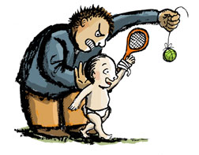
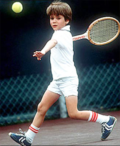
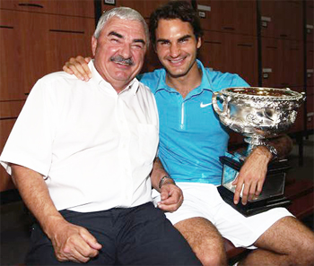
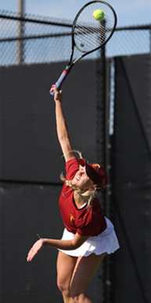
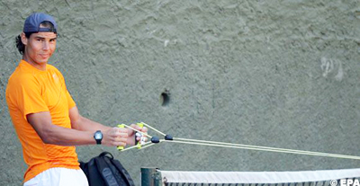
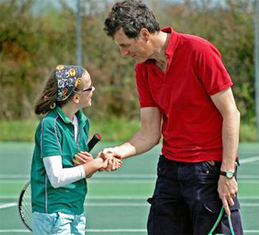
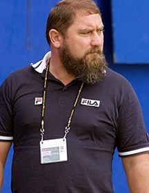

Previous: The Reality of Perfectionism | 🏠 Mental Game Home | Next: The Value of Optimism: Brad Gilbert
The Tennis Parent: Blunders and Solutions
Comprehensive unified tennis knowledge base — Fundamentals, Stroke Analysis, Reference Library, and more
The Tennis Parent: Blunders and Solutions
Frank Giampaolo

Parents can make blunders that are real negatives in a player’s development.
One of the best kept secrets of the successful junior tennis champion is the role of a knowledgeable, educated primary tennis parent. Unfortunately, parents also sometimes make blunders that can be negatives in their child's development. In this article, let's take a look at some of those and the solutions tennis parents should pursue instead.
This article is adapted from my new book "The Tennis Parents' Bible." But many of the insights here and in the book are applicable to players of all ages and abilities, and I suspect everyone will recognize themselves at least in part in some or even many of these scenarios.
Underestimating the Success Formula
Here it is folks. The success formula. It is called the 10,000 hour rule. It takes 10,000 hours of hard work to reach the world class level in any field. The first blunder is either not knowing the rule, or deciding your kid is so special and talented that it doesn't apply.
The 10,000 hour rule applies to all fields of expertise—music, sports, science--and was first recognized as far back as 1899. What does this mean for junior players? For approximately ten years, your child should be spending 20 hours per week in tennis related activities to become a world-class player.
This article is excerpted from the The Tennis Parents' Bible. (Click Here for more information.)
Being an Unaccountable Parent
Let's look briefly at a typical open ranked junior player's schedule, to see the formula for logging those 10,000 hours.
There are 168 hours in a week. (7 times 24.) Sleeping takes up roughly 56 hours. School and homework take up roughly 60 hours.
High performance tennis training takes up 15-20 hours. Add on travel and meals, and the average player is still left with approximately 25 hours a week unaccounted for.
Unaccountable players believe they don’t have enough time to train. Organized and accountable players know there is plenty of time to train!
Here is another example of an accountability issue. National junior tournaments are often held over holiday breaks. Do you choose to spend Thanksgiving at home with your family and friends, or are you okay spending Thanksgiving in a hotel out of state?
Do you choose to remain home so your child can prepare properly for the winter nationals or do you choose to go skiing the week before the event? You can't have your cake and eat it too.
Avoiding Nurturing Character

Andre Agassi among many other elite pros was an emotional train wreck in the juniors.
Guess who was an angry, emotional train wreck as a junior competitor? If you said Andre Agassi, Rafael Nadal, Roger Federer and even the iceman Bjorn Borg, then you're right!
Moral excellence is a maturing process. Everyone can compete in a relaxed, happy state, but not everyone wants to. Let's say that again. Everyone can compete in a relaxed, happy state, but not everyone wants to!
Often negative behavior has been motor programmed into the player's routine. It becomes a comfortable, dirty, old habit.
The development of character lies in the ability to first learn to be uncomfortable competing without the negative act. It's like a stand-up comedian without his props to hide behind. The old props are comfortable.
The insight lies in the understanding that each player has a character choice. Somewhere in their late teens Borg, Federer and Nadal were taught a wiser code of conduct or chose to apply what they already knew.
Encouraging Dependency
A serious blunder is "selling" dependence. I've seen numerous parents and teaching pros fall into this category. Often parents and coaches live vicariously through their super stars.
Their fear of being abandoned by the champ motivates them to create dependency. The players live in fear because a parent or coach has insinuated "I'm the only one who can save you" or "I don't ever want to catch you hitting with another pro because they'll mess up your game!"

As a parent do you encourage dependence—or independence?
Successful national champions develop the physical, mental and emotional tools to solve their own problems. It's your job to assist them in solving their own problems, not to solve their problems for them!
Here's what I did as a tennis parent from the time my step daughter was 12 years old and attending her first national event.
"Ok Sarah, this is your event. I'm here to assist you every step of the way. Let's play the co-pilot game. Sarah, I can't drive and read the map. Can you please find the way to the airport? Great!"
"Now find the parking structure. What's our airline? Read the signs and lead the way. Terrific!"
As we de-planed, I would ask Sarah, "Can you follow the signs to baggage claim?" That was easy. Now, were searching for Alamo rental cars, I wonder what kind of car is in slot #26? What's your guess? Oh no, a P.T. Cruiser. Not again!!!
"Sarah, can you read the map and direct us to the hotel?"

With my step daughter, Sarahm now a varsity player at USC, I tried to create independence from day 1.
"Lastly, were going to hit for a half hour tonight on the tournament courts so you can sleep easy knowing the surroundings. Can you co-pilot us to the tournament site?"
Was all that easy, nope. It was like pulling teeth! It would have been a hundred times faster and easier if I had made her dependent on me. Did she learn self-reliance? Did she develop confidence in her abilities with the unknown? Did she become an independent thinker? You bet!
By the age of 15, Sarah was flying comfortably, without us, around the country, as well as to England, Germany and Australia to compete.
Talking Economics Before/After a Match
Dumping unnecessary loads of pressure on a player before or after a match is one of the most common mistakes. I have often heard parents say "If you lose one more time to someone ranked lower than you, we're pulling the plug! Do you know how much we spend on your tennis?"
How do you expect players to hit their performance goals, if you are stressing them out about finances?
FYI : An average family with a young tournament player participating in local/ sectional events spends an average of $300.00-$500.00 per week on tennis related activities!
Thinking Perfect Strokes are Mandatory
Legendary star Andre Agassi states in his book that he was still learning how to volley when he retired. Pete Sampras wasn't thrilled with his topspin backhand.
At the end of his career, Agassi said he was still learning to volley.
John McEnroe is quoted as saying "Nobody has perfect strokes; it's what you do with what you've got that counts!" These champions simply competed with their secret weaknesses. Learn how to expose your strengths and hide your weaknesses!
Parents, players and coaches who are waiting for every stroke to be perfect before they begin to compete are missing the boat. Every national champion I've ever coached had holes in their game as they held up the gold ball. The trick is learning how to compete with imperfections.
Even if your child did possess perfect strokes on the practice court, different strokes will still occasionally break down at different stages of an event. Dealing with imperfection with back up plans are an important tool in your child's tool belt.
Managing Without a "Hollywood" Script
Hollywood parents with "wanna be" child stars have the reputation for being a little nuts right? Hollywood parents drag their kids from audition to audition in search of ways to live vicariously through their kids.
Well, I don't recommend that. What I do recommend is asking your child to use the system that Hollywood stars use when working on a sit com. Here's their four-part system.
Try the Hollywood system.
First, the star gets the script for the show. Your child gets a script for how to beat a moonballer. (That script is in the book).
Second, the Hollywood star spends hours running the lines (Your child will ask a hitting coach to run the patterns used to beat those pesky pushers).
Third, the Hollywood stars spend the week doing dress rehearsals. (Your child has to run those patterns on the practice court, in practice sets often for weeks at a time doing dress rehearsals).
Fourth, the actors shoot the show in front of a live audience (Your child plays the actual tournament). All too often our junior competitors learn a wonderful pattern, and then they choose not to rehearse the patterns on the practice court. They choose to forget about actually doing any dress rehearsals and wonder why they lose to another moonballer!
Parents, use this four-part method to develop your child's game-learn it, memorize it, rehearse it and achieve it. (And that goes for you adult players too…)
Ignoring Off-Court Training, Proper Nutrition and Hydration
What does off court training have to do with the mental side? When players get fatigued, their movement gets sloppy, their stroke spacing is off, and unforced errors begin to fly off their racket. Poor decision making and negative emotions set in.

There is a direct relation between physical training and the mental game.
Often, the actual cause of a child's emotional breakdown is lack of fitness. Unfit players do not perform their rituals, they do not spot tendencies and they do not manage their mistakes.
For instance, most juniors go for low percentage shots due to the fact that they are too tired to grind out the point. So, is off-court training linked to the mental side? Absolutely!
Proper hydration and nutrition are also critical factors in the physical, mental and emotional links of every tennis competitor. As parents, we have to insist that our players fuel up before battle. Dehydration triggers fatigue, dizziness, headaches and nausea.
Improper nutrition lowers the blood sugar levels to the brain. Improper nutrition and hydration guarantees poor decision making skills at crunch time.
Not Acknowledging Your Child's Efforts
Once a month, throughout the course of your youngster's tennis career plan on sitting down and writing a letter stating how proud you are of them. Place it on their bed at night.
Parents, do you realize that most full grown adults don't focus on their job 100 percent of the time! They may be at work, but what are they actually doing?

Do you acknowledge the efforts of your junior player on a regular basis?
It's my bet that most adults could not handle the pressure a serious junior competitor endures day in and day out. Take a few moments to acknowledge how proud you are of their efforts. Thank them for the courage they show as they lay it on the line week after week.
Asking your Child to Fix a Flawed Stroke While on the Tournament Trail
It takes about four-to-six weeks for a new motor program to override an old one. The success rate of actually fixing a flawed stroke fluctuates. It depends greatly on the talent, work ethic, professional advice and allotted time spend deprogramming the old stroke while re-wiring the new motor program.
The actual progression works like this. You decide it's best to fix a flawed stroke. So, on week one your child has 90 percent of the old motor program (doing it the old way) and only 10 percent of the new motor program (when they actually feel the new program correctly).
During week two, the progression slides from still around 70 percent old motor program to 30% new. At three weeks into the new development, your child will perform about 50/50.
Now the fun begins! Week four, the new motor program starts to override the old one at only 40 percent old to 60 percent new! By week five, it's at 30 percent old to 70 percent new.
Would Pete Sampras change his backhand in the middle of a competitive cycle?
By week six, the old motor program is almost eliminated. It shows up about 10 percent of the time as the new improved stroke is programmed to replace it.
Issues arise when you put your child into a competitive situation without giving the new motor program the time it takes to override the old one. If you put your child into a competitive situation before the six- week replacement phase is complete, you are absolutely guaranteeing that your child will go back to the old, but flawed, comfortable stroke.
Now guess who just wasted all that money on the lessons to correct the flaw? You!
Playing Them Up Too Soon
A player should prove themselves in a certain level of competition before jumping to the higher level. I recommend that a child win two events in a division before you bump them up to a higher age division. It's a bad idea to bump them up because they can't handle playing their peers. This applies to practice sets as well!
Players need to rehearse closing out matches against different styles and levels of players.
Talking at Visual Learners
Mr. Kolouski says to me, "I've explained numerous times to my son, about decreasing the racket face angle 30 degrees. I told him to rotate his right palm a quarter of a turn. I've expounded on the 60 degree lift through the shoulder hinge. I decipher things for hours. I explain everything in detail, yet my son's still confused. I feel like I am conversing with a granite wall!"
Different people have different learning styles or preferences. Getting into your child's world and understanding how he's wired is the key. Remember that a parental and coaching blunder is forcing him to enter your world!
Visual learners need images not words to convey technical concepts.
The three preferred learning styles are visual learners, auditory learners and kinesthetic learners. Explaining detail after detail for hours on end to a visual learner is just plain preposterous!
Parents Word's That Don't Match Their Actions
Loving parents with great intentions often sabotage their words of wisdom by saying one thing and doing the other. Asking them to be prepared, timely and organized when you're not sends mixed messages. Understand that if rules and laws don't apply to you, don't expect rules and laws to apply to them!
Teaching them not to lie and then lying to your mother- in- law about why you can't make the family Thanksgiving in Cleveland is sending mixed messages. (Ok, I wouldn't necessarily want to spend Thanksgiving in Cleveland either, so you can lie about that one, but not in front of your child).
Ignoring your Non-Verbal Communication
In Malcolm Gladwell's book "Blink," he shares an interesting insight regarding surgeons who make a medical mistake. The bottom line is surgeons with top credentials, but poor bed side manners are more likely to get sued, then are surgeons with the same credentials, making the same mistake, but with terrific bed side manners (Of, course there are exceptions).

Even a subtle look conveys a powerful message.
A parent or coach with a condescending tone of voice, a disgusted facial expression or even negative body language, is often the trigger that sets your child into a defensive position. Studies show that up to 70 percent of communication is nonverbal.
We initially believe that we are helping our children by spotting every single problem and bringing it to light. This "tough love" isn't in their best interest. Instead, parents, if you want dynamic results, along with a happier child try adding positive power words to your tennis talks.
They include: Great attitude; You're so brave; Terrific energy, You're playing fearlessly; It's so fun watching you perform; You have guts; You motivate me; You look strong out there; I'm so proud!
After all, isn't that what you wanted to hear from your folks? Every child needs to hear these positive statements from their parents. Being Arrogant To Lower Ranked Players and Their Parents
Remember the wall the top players had when your child was the newbie? Remember how you felt with the other parents looked right through you?
I challenge you not to make the same mistake they've made! Open your hearts and welcome them.
There is a parallel between our attitude towards strangers and our overall happiness. You never know that new kid just may be your child's doubles partner in a year or two.
That new parent may know of a great trainer, coach or academy in the area or information regarding a new tournament. Trust me. The more you give and help others, the more you get back in return.
Tennis parents who never competed can send ugly messages.
Criticizing Other Players
I must say, Mom's who've never competed in sports are the worst. Come on, you know who you are! You criticize others in hopes to make yourself feel bigger. Yet, it leaves you ashamed and deflated.
In my opinion, actions speak louder than words. So, what kind of message are you actually sending your child? Is teaching your child that their parent is actually an ugly person the message you want to send? Look for the positive. Say something nice. If you can't find a single nice thing to say, don't say anything at all!
Talking about Your Child's Peers
At tournament sites we often hear parents and inexperienced coaches unknowingly sabotaging their player's upcoming performance by pulling their attention completely away from their performance goals. They do this by talking about the success of their child's peers.
It's best not to discuss other players lucky draws, their great wins, who's seeded where, other players improved rankings, the past success of the opponent, match outcomes and future ranking speculations. These conversations clutter the player's mind with needless distractions and unwanted stress.
Refusing To Play Them Down, When It Might Pump Them Up!
Are you seeking to build your child's confidence, self esteem or focus ability? Do you want to provide the crucial experience needed in order to be comfortable playing in tough finals? Playing down to pump them up is a marvelous idea. Winning a title, no matter what size, motivates them more than 20 hours of lessons.
Here's a wonderful story about how success breeds confidence. I encourage every player, in every level, who is in a rut to apply this approach.
Vania King is a former junior doubles partner of my step daughter. We had tons of fun working on the art of doubles. Vania is a motivated, persistent and hard working tennis player.
Vania King showed that "playing down" can be the path to that leads all the way up.
Although Vania failed to win tons of national junior titles growing up; she found tremendous confidence in a far off land. Prior to the summer national hard courts, Vania decided to try her luck in the most exotic locations in Asia. Playing the lesser events, she took the road less traveled on the ITF junior circuit.
Vania found success winning a couple of minor ITF events. This sky rocked her confidence in herself! It also drew attention from the USTA, which in turn awarded her a hand full of wildcards into major WTA tour events including the U.S. Open.
Armed with this new found confidence, Vania won a few rounds in the U.S. Open and by year's end found herself ranked top 50 in the world on the WTA pro tour. Sometimes playing down can pump them up! Vania went on to win the 2010 Wimbledon and US Open Women's Doubles titles.
The lesson there is obvious—and it applies to all levels of tennis. Would you really prefer to play over your head in NTRP competition, lose every match, but claim the higher rating?
Or do you want to become the best player you can actually be, but competing and winning at the lower levels, and earning you way into the higher divisions? Those are questions worth asking.

Frank Giampaolo has been a leading Southern California tennis coach for 25 years, and is the author of a comprehensive new work on player development, Championship Tennis, as well as the author of The Tennis Parent's Bible. He has conducted workshops on mental training around the world, and participants have included over 60 junior players who went on to win U.S. National singles titles. He speaks regularly at coaching conventions and has made national television appearances worldwide.
To find out more about his mental and emotional training workshopsClick Here!

Championship Tennis: The All-Inclusive Guide
In this new book from Human Kinetics, Frank Giampaolo presents a life time of high level coaching insight into every aspect of tennis development--athletic assessment, skill development, the mental factor, match preparation, practice, and planning. This book is designed to help players and coaches accelerate the learning curve by customizing the process to the needs of every individual player.
CLICK HERE TO ORDER !
Source: tennisplayer.net archive — The Tennis Parent - Blunders and Solutions.docx (John Yandell teaching library, 2002-2022). Extracted and rendered as HTML for Tennis Future Lab.